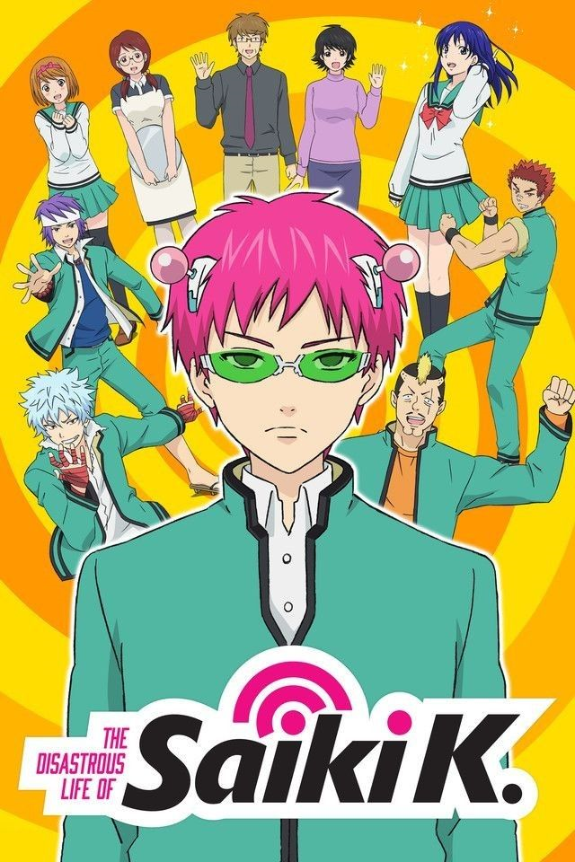
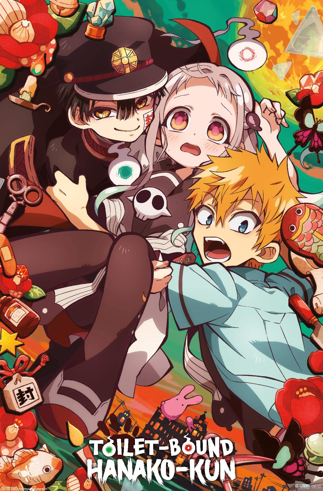
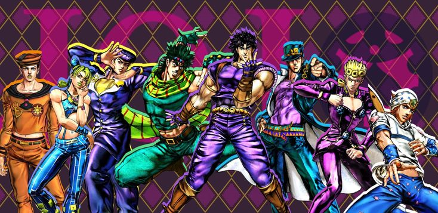
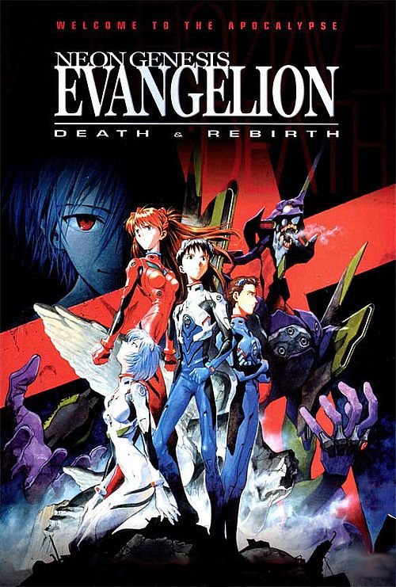
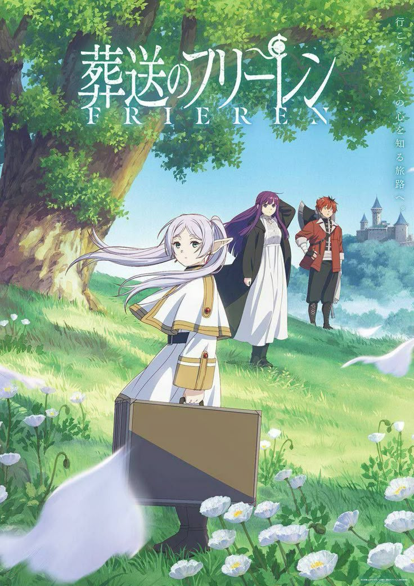

¡Entérate de nuestras recomendaciones de comedia que tenemos para ti!
Saiki K

Es un anime muy divertido, en el cual nos adentra en la desastrosa vida de Saiki K (Kusuo) un estudiante de secundaria "normal" ante sus compañeros de clase y la sociedad en general, pero el esconde un secreto... es un poseedor de una gran gama de poderes psíquicos. Me parece demasiado entetenido como es que en cada capítulo tiene un nuevo atraco donde se le es posible mostrar sus poderes y ser descubierto de lo que es capaz, pero con mucha inteligencia logra salir de ello; un joven estudiante que solo quiere ser un "chico normal" por un solo día. Recomiendo bastante este anime si lo que buscas es reirte y distraerte de tu vida un rato seguro y Saiki K es para ti.
Asobi Asobase

En lo personal yo recomiendo bastante esta serie ya que me parece demasiada absurda la manera en que suceden los hechos, esta serie nos cuenta las vivencias de 3 chicas en el "club de juego" del que son pertenecientes; Olivia, Kasumi y Hanako; nos muestra sus travesuras a lo largo de la serie y como es que juegan estos inocentes juegos tradicionales.
Jibaku Shounen Hanako-kun

Es una serie que se puede usar para dar un descanso a la mente, ya que su historia ademas de tener una buena trama tuene un muy buen descanso cómico, su grupo de protagonistas es entrañable y te hace querer saber que sucedera con ellos a lo largo de la serie. Sigue a Yashiro Nene, la protagonista, quien quiere que el chico que le gusta se fije en ella, recurriendo a un misterio que existe en su escuela, pero algo sale mal ¿qué sucedera con ella despues de hacer esto?.
Jojo's Bizarre Adventure

Jojo's Bizarre Adventure es un anime muy interesante y divertido a pesar de estar en la clasificación de terror. Nos cuenta la historia del linaje Joestar y como es que se ven involucrados en una serie de desgracias; que van de generación en generación; gracias a una mascara misteriosa perteneciente a la familia y a un muy vengativo y avaricioso antagonista llamado Dio, quien es el que se encargara de hacer imposible la vida de los Joestar en el momento que se da cuenta de los beneficios de esta mascara... Al inicio era solo querer apoderarse de sus riquezas y poder pero con el tiempo se vuelve la necesidad de querer todo de ellos.
En conclusión, si quieres ver algo que te haga querer ver como es que un antagonista es capaz de querer saciar sus caprichos por decádas, este anime es para ti.
Gakkou Gurashi

Gakkou Gurashi muestra las vidas de 4 chicas que deciden quedarse a vivir en su escuela: Yuki Takeya, Kurumi Ebisuzawa, Yuuri Wakasa y Miki Naoki. Junto con la consejera de la escuela, Megumi Sakura, de pronto se encuentran como las últimas supervivientes de un ataque zombi y siguen tratando de sobrevivir en la escuela.
Este anime es muy tierno al inicio ya que solo muestra el lado divertido de como es que las chicas viven en una pequeña aula y cuidan de un huerto que se sitúa en la azotea, pero con el paso de los capítulos se empieza a tornar un poco turbio y oscuro cuando van mostrando su cruel realidad del porque es que viven en la escuela.A pesar de todo eso, opino que es recomendable si lo que quieres es saber realmente que es lo que sienten las chicas y el deseo de salir de ese lugar.
Neon Genesis Evangelion

Cuando unos monstruos violentos descienden a la Tierra para destruir a la humanidad, Shinji, un joven de 14 años, se une a un pequeño escuadrón de pilotos bajo el mando de su padre, utilizando máquinas gigantes que parecen tener sus propias mentes.
A pesar de no ser muy fan de los animes de ciencia ficción, este anime me hizo cambiar de opinión, la manera en que se muestran los hechos y la total influencia de los sentimientos de un adolescente es impresionante.Pienso que se encarga de que el espectador se meta en su totalidad a la historia y reflexione junto con el protagonista como es que sus desiciones e impulsos en medio de los ataques de los angeles pueden y llegan a perjudicar a todo el mundo.
the apothecary diaries

Maomao llevaba una vida tranquila ayudando a su padre, un boticario. Todo cambia el día que la venden como sirvienta al palacio del emperador, pero la vida entre nobles y realeza no es para ella. Cuando la familia imperial enferma, ella decide intervenir para encontrar una cura, lo que llama la atención de Jinshi, un guapo oficial de palacio que decide ascenderla como dama de compañía de una de las concubinas del emperador. ¡Su habilidad con la medicina la hará conocida en el palacio por ayudar a resolver muchos misterios!.
La recomiendo bastante pues su trama hace que tambien quieras resolver los misterios con los que se encuentra la protagonista, es muy entretenida y cuando menos lo esperes ya habras visto varios capítulos.
dungeon meshi

Nos transporta a un reino de fantasía donde un intrépido grupo de aventureros se aventura en una mazmorra en busca de tesoros, todo esto cambia cuando una de las integrantes de este grupo es deborada por un dragón rojo, una de las criaturas más peligrosas dentro de la las mazmorras, al pasar esto, lo que queda del grupo buscara la forma de rescatarla, pero... se han quedado sin comida y el tiempo esta en su contra, deben rescatar a su compañera antes de que sea digerida, ellos toman una gran decisión ¡comer mounstros en el camino a rescatarla!, algo que nadie ha hecho.
Esta serie me tuvo con los pelos de punta durante varios de sus capitulos ya que tiene giros de trama que me fueron muy inesperados, además de esto, las recetas que presenta, en manos de alguien con habilidades para la cocina deben ser muy buenas.
frieren beyond journey's end

Tras la derrota del Rey Demonio, el grupo de héroes restauró la paz en la tierra y regresó a una vida de soledad. Transcurren las generaciones, y la maga elfa Frieren se enfrenta a la mortalidad de la humanidad. Acepta un nuevo aprendizaje y promete cumplir los últimos deseos de sus viejos amigos. ¿Podrá una mente élfica reconciliarse con la naturaleza de la vida y la muerte? Frieren emprende su búsqueda para descubrirlo.
Es diferente a otras historias ambientadas en un mundo de fantasia ya que no nos presenta ese típico viaje que se tiene que hacer para derotar a un enemigo en específico, sino que esta transcurre después del dicho viaje y de cierta forma nos cuenta una versión de lo que pasaría después. Es una serie sumamente sentimental que nos deja ver la añoranza por el tiempo pasado de la protagonista, mientras que trata de entender a los humanos y su pensar.
ranking of kings

Incapaz de oír, hablar o incluso de empuñar una espada, el príncipe Bojji no parece el típico heredero al trono, algo que todo su reino comparte. Pero un encuentro con una misteriosa sombra hace que consiga su primer amigo verdadero. Ambos partirán a una gran aventura y forjarán un vínculo capaz de superar cualquier obstáculo... incluso la dificultad de convertirse en rey.
Es increible el como a pesar de que el protagonista no dice ni una sola palabra a lo largo de los capitulos, es imposible no tomarle cariño ya que nos muestran su gran avance, de manera personal y el como este va obteniendo sus metas poco a poco, hay capítulos que te haran llorar y algunos otros que te llenaran de euforia por lo que pasa a lo largo de los capitulos. Lo recomiendo completamente, una gran serie sin duda.